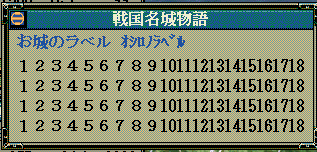
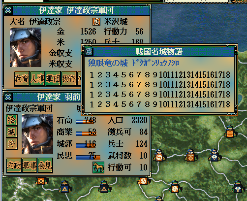

戦国名城物語型＆ カスタム::On_戦国名城物語要求時(int 城番号) {
return NULL;
}

戦国名城物語型＆ カスタム::On_戦国名城物語要求時(int 城番号) {
// 二条城の位置にある列伝を見ようとした時、無条件で表示を変更する。
if (城番号 == 128) { // 128とは京都二条城の位置の城番号のこと。
戦国名城物語型 mm(
"お城のラベル ｵｼﾛﾉﾗﾍﾞﾙ",
"１２３４５６７８９101112131415161718\x0A"
"１２３４５６７８９101112131415161718\x0A"
"１２３４５６７８９101112131415161718\x0A"
"１２３４５６７８９101112131415161718\x0A"
);
return mm;
}
// 変更しない場合NULL
return NULL;
}
戦国名城物語型＆ カスタム::On_戦国名城物語要求時(int 城番号) {
// 伊達政宗が大名の時、その居城の列伝だけ変化する。
// 政宗がどこの城にいるかは関係ない、彼がいる城の列伝の表示を変化させる。
// 番号→配列番号
int iMonogatariCastleID = 城番号 - 1;
// 城の範囲チェック
if (0 <= iMonogatariCastleID && iMonogatariCastleID < 最大数::城情報::配列数) {
// 伊達政宗は今、天翔記に居るか？ 武将番号何番？
int iMasamuneBushouID = Get_武将番号【配列用】(顔番号::伊達政宗); // 通常は伊達政宗の顔番号
デバッグ出力 << Get_名前(iMasamuneBushouID) << endl;
// 範囲チェック
if (0 <= iMasamuneBushouID && iMasamuneBushouID < 最大数::武将情報::配列数) {
// 政宗は大名か？
if (p武将戸籍情報[iMasamuneBushouID].身分 == 身分::大名) {
デバッグ出力 << Get_名前(iMasamuneBushouID) << "は大名" << endl;
// 政宗が居る城はどこ？
int iMasamuneCastleID = p武将情報[iMasamuneBushouID].所属居城【城番号】-1; // 正宗が所属する城
デバッグ出力 << Get_城名(iMasamuneCastleID) << "に居る" << endl;
// 今表示する「戦国名城物語」の城と、政宗が居る城とが同じものである。
if (iMonogatariCastleID == iMasamuneCastleID) {
戦国名城物語型 mm(
"独眼竜の城 ﾄﾞｸｶﾞﾝﾘｭｳﾉｼﾛ",
"１２３４５６７８９101112131415161718\x0A"
"１２３４５６７８９101112131415161718\x0A"
"１２３４５６７８９101112131415161718\x0A"
"１２３４５６７８９101112131415161718\x0A"
);
return mm;
}
}
}
}
// 変更しない場合NULL
return NULL;
}
